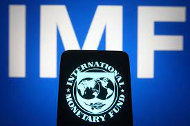

Desaceleração do Crescimento da Economia Mundial em 2024
Ricardo Brandão 14-02-2024 - A economia mundial deve crescer 3,0% em 2024, segundo o Fundo Monetário Internacional (FMI). O ritmo de crescimento será menor do que em 2023, impactado por fatores como a guerra na Ucrânia e a alta dos juros nos Estados Unidos.
Fatores que Influenciam a Desaceleração:
- Guerra na Ucrânia: A guerra na Ucrânia está causando um impacto significativo na economia global, com aumento dos preços de commodities e interrupções nas cadeias de suprimentos.
- Alta dos juros nos Estados Unidos: O Federal Reserve, o banco central dos Estados Unidos, está elevando os juros para combater a inflação. Isso está encarecendo o crédito e pode desacelerar o crescimento da economia global.
- Desaceleração da economia da China: A economia da China, a segunda maior do mundo, está desacelerando. Isso pode afetar o crescimento da economia global, pois a China é um importante mercado para muitos países.
Setores que Devem Ser Mais Afetados:
- Comércio internacional: O comércio internacional deve crescer menos em 2024 do que em 2023, devido à guerra na Ucrânia e à desaceleração da economia global.
- Indústria: A indústria também deve crescer menos em 2024, devido à alta dos juros e à desaceleração da economia global.
Desafios para o Crescimento:
- Resolução da guerra na Ucrânia: A guerra na Ucrânia é o principal desafio para a economia global em 2024. Uma resolução rápida do conflito seria importante para evitar uma desaceleração ainda maior do crescimento.
- Combate à inflação: Os bancos centrais de todo o mundo precisam continuar a combater a inflação, mas precisam fazê-lo de forma a evitar uma desaceleração significativa do crescimento.
Perspectivas para 2024:
O crescimento da economia mundial em 2024 será menor do que em 2023, mas ainda é um crescimento positivo. A economia global deve se recuperar em 2025, à medida que a guerra na Ucrânia for resolvida e os bancos centrais começarem a reduzir os juros.